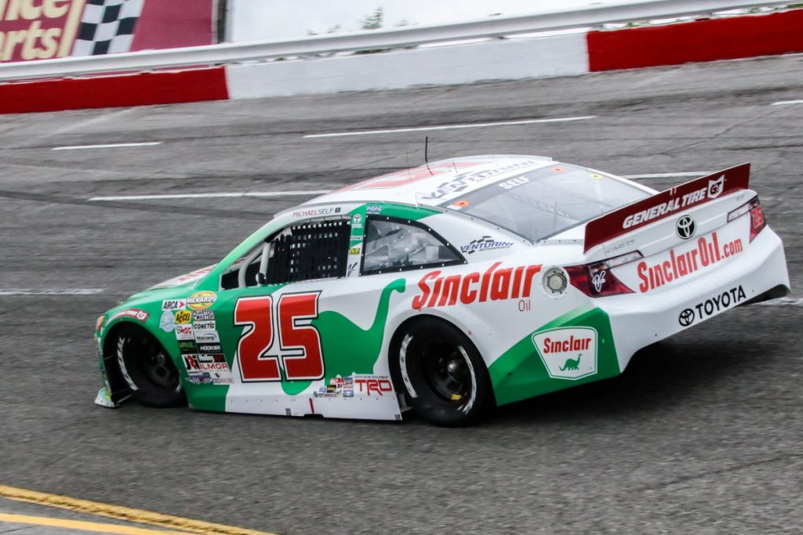

Rumor has it that the relationship between Michael Self and Venturini Motorsports has broken down, following a string of penalties and mechanical failures that cost Self the 2019 championship. The 28 year old Utah native will likely still have backing from Sinclair Lubricants in 2020, although it is unknown where he would take that backing. Possible destinations for Self include Chad Bryant Racing in ARCA and Thorsport Racing in the truck series.